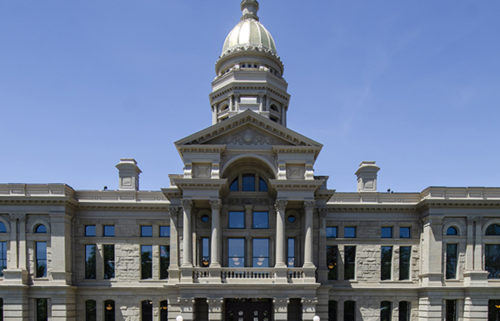

Fish Haven, ID
weather update
Currently:
High:
Wind Chill:
Humidity:
Wind Speed:
Currently:
High:
Wind Chill:
Humidity:
Wind Speed:

SODA SPRINGS — The area where present-day Soda Springs is located has had many names. But its first name, the name the native Shoshone and Bannock tribes gave it, was Tosoiba — the land of sparkling waters.
Before the first permanent settlement was established, it was believed Tosoiba was home to more than 1,000 freshwater springs. These springs varied in temperature, from hot to cold, effervescence and flavor. The springs are a key point in the history of the area.
The springs
“Soda Springs has been on the map since the days of the Oregon Trail as an ‘Oregon Trail Oasis’ because of the sparkling water that we have here,” Soda Springs Mayor Austin Robinson said.
According to book “Tosoiba,” written by Camp Meads with the Daughters of Utah Pioneers, the springs provided fresh water to the early Native Americans who drank it for the medicinal qualities they believed it had. Native American women used the powdery buildup around the springs to clean clothing and bleach leather.
Instead of the Native American name for the area, trappers who came through called it Beer Springs. In 1842, Captain. John C.Fremont wrote in his journal about visiting Beer Springs for the first time and described where the name Beer Springs came from.d White Pine STEM Academy: Closed March 17-20. Then we are on spring break. School will resume Monday, March 30.